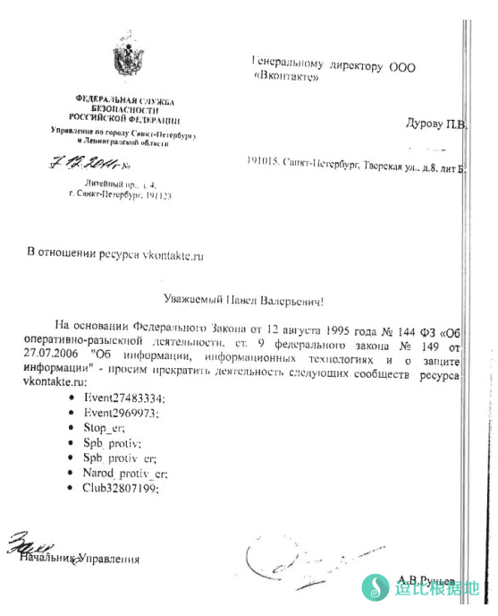
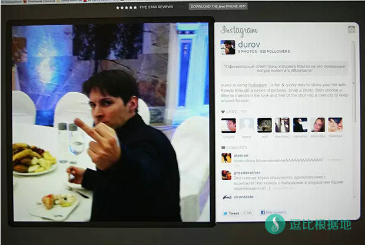

说了很久要写Telegram的故事，一直拖延没有写。在我拖延的这段时间里面，Telegarm继续快速增长，前几天，在旧金山的TechCrunch Disrupt活动上，创始人Durov说现在Telegram每天发送的消息数已经达到了120亿条，而今年2月的时候只有10亿条，是时候写完这个故事了。不过，随着它的出名，在中国也毫无悬念的变得难以访问，所以，如果你看完下载了它，又觉得不好连上，程序崩溃什么的，这并不是Telegram的错。
每天120亿条消息是什么概念呢？我能找到的Whatsapp最新一次公布这个数字是今年4月，每天640亿条，这可是Facebook以190亿美金代价重金收购的App，并且被当作Facebook在移动平台上最好的投资之一。出生在最大的互联网市场美国，并且有Facebook的全力支持，也只是几倍于Telegram的规模而已。如果不出意外，未来的某个时候，Telegram会超过Whatsapp。
消息数量和月活跃用户上，Telegram显然比Whatsapp和微信还有很大差距。但这是一个只有2年历史的新工具，并且他是一个完全私人拥有的公司，没有其他股东，没有投资人，号称永远不会出售，并且，它有着一支人数极少又战斗力极强的团队…这一切都让这个产品显得与众不同。如果要说这个时代的传奇，Telegram和它的创始人甚至团队，都完全可以入选。它和人们所知道的各种创业故事、商业传奇完全不一样，但又具有传奇故事的一切要素：黑客高手、政治、极权、阴谋…富豪，一应俱全。
2014年1月24日对于Telegram是个惊喜的里程碑。在这一天，Facebook宣布收购了最流行的即时通讯软件Whatsapp。在之后的5天里面，Telegram增加了800万用户。究其原因，很多发达国家的用户对隐私有着更大的担忧，Whatsapp变成了Facebook这样大公司的资产，之后必然会发生数据交换，这是对隐私的巨大挑战。越来越多的数据掌握在大公司手里，这显然不是一件让人放心的事。这时候开始有更多人注意到了Telegram，这个极其注重隐私的工具，并且开始尝鲜。在那几天，很多人是第一次知道其创始人Durov兄弟，并且从媒体得知了他们是俄罗斯富豪。以至于Durov不得不在Twitter喊话，说请用户放心，我们团队并不在俄罗斯，现在的公司注册于德国柏林，非常安全。
他们当然非常安全，因为柏林也只不过是这个团队一系列复杂的离岸公司控股结构中的一环。至于团队到底在哪，干脆没人知道。创始人Pavel Durov很可能根本不和团队在一起，甚至很多人猜测他们压根没有一个物理的办公室，而是一个用Telegram沟通的分布，实际人分散在世界各地的团队。酷爱八卦的媒体们也基本没有挖到过他们在物理世界的位置，更没有探访过他们的办公室。至于Pavel Durov本人，倒是会偶尔出现在世界各地接受一些采访和参加活动，只不过一会儿出现在柏林，一会儿出现在旧金山，有记者问他到底住在哪，他想了一下，似是而非的回答“巴黎挺不错的。“在Telegram发展的这两年里面，被媒体挖到的办公室位置只有一次，那是在位于纽约州水牛城（Buffalo, NY），这是一个和高科技不怎么沾边的城市，它是尼亚加拉大瀑布的美国那边，和加拿大安省接壤，并且以安大略湖的大湖效应造成的巨型暴风雪出名。这曾经是Pavel逃离俄罗斯之后的第一站，我甚至怀疑他们是到机场随便买了最近一班离开俄罗斯的飞机，从而随机到了这个城市。Telegram团队也提到过，他们第一个数据中心位于Buffalo。但现在那个办公室早就人去楼空。不知道是不是因为被人发现所以搬家了，我还是请朋友帮忙拍下了这个外观相当普通的办公楼照片。这个团队的神秘和传奇可见一斑。
在创建Telegram之前，Pavel Durov以俄罗斯社交网站VK创始人闻名。2006年Pavel Durov和他的哥哥Nikolai Durov一起创建了VK，随后的几年，它成了俄语区最流行的社交网站。Pavel Durov不止一次自豪的说，VK是唯一一个在自由市场竞争中胜过Facebook的产品。Mark Zuckerberg后来自己也承认，曾经认为Facebook超越VK是早晚的事，没想到到现在已经有10年，仍然没能超过它。Pavel也毫不掩饰VK曾经从Facebook借鉴了很多东西，他说，毕竟我不是设计师啊，要全都自己设计要花更多时间。早期的VK从页面设计到推广方法，都跟Facebook完全一致，他也是从俄罗斯几个著名大学开始的，但后来变得越来越不一样。Pavel Durov 和Facebook创始人Mark Zuckerberg岁数一样大，都出生于1984年。媒体曾经总是把这两个人放在一起对比，两个年轻的互联网新贵。但是近年来形势变得非常诡异，为了言论自由，Pavel被迫放弃了他曾经所创造的一切，逃离俄罗斯，安全生活在美国的Mark Zuckerberg反而一直配合俄罗斯政府自我审查，Pavel经常发文讽刺他…看到Mark和Facebook这几年的所作所为，我完全赞同Pavel对他的讽刺。
图片：Pavel Durov 照片，真是帅啊，这张是给女读者的福利…
2011年开始，事情的发展已经美国人已经很难看懂了，但是还好我们是中国人，我们都懂。这一年，Durov兄弟的日子开始艰难起来。他们是强烈的自由捍卫者，认为言论自由高于一切。当时，俄罗斯国家安全机构要求VK关闭一些普京反对者的页面，遭到了Pavel拒绝。随后全副武装的反恐警察小队就突袭了他的住处和办公室，想必后来也发生过很多次不为人知的秘密谈话…
2014年俄罗斯入侵乌克兰的时候，俄罗斯安全机构再次要求VK交出一位乌克兰活动家的个人信息，Pavel不仅贴出了文件全文，还连续贴了两张穿着衣服的小狗照片嘲讽安全官员们。
图片：他收到的俄罗斯安全部门的文件其实还是很正规的，要是其他国家也可以给一份这样的文件，删贴的时候大家可能会更没怨气一点吧。

图片：他回复的就是这张小狗…
图片：随后又发了这一张…
这大概彻底激怒了普京。其实在此之前也有一些奇怪的事情也开始发生在了Pavel Durov身上，比如指控一辆他名下的汽车发生了交通事故逃逸之类的，尽管他自己根本没碰过这辆车。
Pavel Durov并没屈服。普京对他的要求很简单，要么听话，要么把所持有的VK股份，卖给普京亲信所掌握的基金或者其他关联公司。Pavel仍然拒绝出售股份，只是这一次，他回旋的余地越来越小了，在前面几年中，普京亲信的基金们一直在从VK其他股东手里收购股份。董事会里面Durov兄弟终于成了孤家寡人，最后被迫卖出股份，放弃了他创造的一切。当然，俄罗斯政府比其他国家稍微好一点，至少是花钱买股份，因为有保密协议，Pavel没有透露过实际交易金额，不过人们推测应该有4亿到5亿美元这个级别。比起Facebook的市值不值一提，但对Pavel这样有足够大理想又一心实践理想的人，这已经能让他做很多事了。
图片：Pavel Durov 回应mail.ru并购VK事件。mail.ru同样被普京亲信的基金控股，过去mail.ru本来也有VK股份，Pavel手里还有mail.ru的投票权，这一次是要完全并购…另外，mail.ru股东还有一家中国公司，猜猜是谁？呵呵，答案是腾讯…

在被查水表的那些年里面，Pavel已经开始逐渐实施他理想的生活模式，其中最重要的一点是放弃所有固定资产。他卖掉房子、家具、车…到他卖出VK股份的时候，他已经不再持有任何固定的资产了，只有大量的钱。差不多也是在这段时间里面，他和哥哥Nikolai完成了Telegram最早期的工作。关于为什么要做一个强加密，非常在乎隐私的工具，Pavel Durov自己说，是第一次被警察突袭住处的时候，他给哥哥打了一个电话，电话接通的瞬间，他突然意识到电话是不安全的，一定会被监听。随后他发现，没有任何通讯方式可以保证他想要的安全和隐私，它们都有各种缺陷，要么是天生的缺陷和技术限制，要么是工具运营者的配合，导致这些工具毫无安全可言。
既然没有一个可靠的通讯工具，那就自己做一个好了。兄弟两人又一次重新合伙开始一个新项目，Nikolai为这个工具设计了加密协议和架构，这就是Telegram。所以，Telegram是为了隐私和安全而生的。和一些工程和产品团队开发的通讯工具不一样，它是真正由数学家主导的项目，坚实可靠。
说到这里，要介绍一下同为VK创始人的Nikolai Durov，他是Pavel的哥哥。wikipedia上对他的描述是“程序员，数学家”，此人参加了3次国际数学奥赛，拿回了3块金牌，又参加了4次国际信息学（计算机）奥赛，拿回了1块金牌和3块银牌…绝不空手而归，从小就是天才人物。Nikolai Durov并不是那种擅长竞赛数学的书呆子，除了读了2个数学Phd，他还一直领导VK工程师团队。那也是一个人数少而精的技术团队，他们完成了VK整个的工程和技术需求，一直到2013年才停止VK的工作。
离开俄罗斯的时候，他们从VK团队中挑选了一些愿意一起满世界流浪的高手，继续由Nikolai带头，组成了Telegram的团队。到目前为止，没有任何公开的资料介绍过团队成员，只能从Github上代码的贡献者稍微窥探到一些团队成员的风格。Pavel在几次访谈和自述中提到过，这个团队中至少有6个人得过ACM竞赛大奖。并且都可以轻松拿到Google或者Facebook这个级别公司极好的Offer。当然这也造成了巨大的人力成本开支，Pavel说因为Telegram不打算出售，团队成员没法通过期权获得收益，所以给大家期权没有意义，他只能给团队开极好的薪水。薪水好到什么程度不得而知，至今只能知道Telegram的开销是每月100万美元，包括人力和硬件网络等等资源开销，大致估算一下就可以知道，这的确应该是极好的薪水，远超过Google这个级别公司高级工程师水平。相对于微信的支出，这个开销应该是个小数字，但考虑到所有资金都是Pavel自己一个人出的，虽然是有几亿美金的富豪，也是个不小的压力。Pavel不止一次表示，绝对不会对最终用户收钱，但是他早晚要让公司盈亏正常。他对于Telegram的预期并不是赚钱，而是可持续，只要公司赚的钱能负担自己的开销，他就满意了。对于始终期盼增长，已经很有钱但还要赚更多钱的互联网大佬们，这是难以理解的疯话。但我相信他是真诚的，Pavel从来不是一个在商言商的人，就算在VK发展比较顺利的时候，他也没事就会发表一些政治言论。这些言论就算在美国都有点惊世骇俗，比如建议俄罗斯废除货币之类…一些颇有乌托邦色彩的言论。他也曾经说过，当他开始有钱的时候，去看了其他俄罗斯有钱人的豪宅和游艇，当即就明白了这不是他想要的生活。对于他来说，改变世界本身比钱有意思的多，钱只是他在改变世界过程中的副产品和资源。他当然有资格讽刺Mark Zuckerberg，比起Pavel的生活，Mark所谓的叛逆只不过是见投资人时候不穿正装穿帽衫而已，实在孩子气。
今年年初，笑来老师迷上了Telegram，想在上面做一些东西，那段时间我帮他读了不少Telegram的代码。边读边佩服这个团队的优秀。Nikolai设计的协议MTProto极其优秀，兼具数学和工程之美，它的加密基础非常完善，同时又在工程上很出色，Telegram传递的消息实际是函数，可扩展性相当强。同时，所有代码都是开源的，在github上可以看到每个项目的贡献者人数都很少，但代码质量相当高。我很惊讶于如此短的开发时间，如此少的人数，产生出这么高质量的代码。Telegram的特色就是快，它的快体现在各方面，不仅仅是协议本身精简造成的传输速度快，Telegram在各平台上的实现几乎都是从最底层的简单API实现，几乎不使用常见的库，而是自己实现所有界面控件。他们的所有控件样式也相当简单，从而让绘制效率非常高。这些努力最终得到的回报，就是它使用起来速度极快，极流畅。如果你在一个正常的网络环境使用，会非常直观的感受到它的效率和稳定。到今天，已经加入了相当多功能的Telegram（包括自定义的贴纸表情和机器人）iOS版只有30M的体积，而微信早就到了90多M，就算是功能简单的多的Whatsapp也有40多M。有兴趣琢磨代码的同学可以去Github上慢慢研究他们开源的代码，肯定会大有收获。
电子前线基金会（EFF）有过一个关于常用通讯软件安全性的评测，其中Telegram的隐私模式满足所有标准。达到这些标准的工具里面，Telegram无疑也是最好用，最时尚的一个。而且Telegram对于安全性的做法也很富豪，Pavel开出赏金，只要有人找到协议的漏洞，就给10万美金奖金。2年来确实有一个人拿到这笔钱，准确的说，那个人找到的是一个隐患，而非漏洞，不过Pavel说隐患也很重要，奖金照给。
一流的数学和工程团队+开源+重金安全悬赏，这些条件造就了Telegram的可靠，让人很难不信任他。我知道有很多人说“等他们需要赚钱的时候会如何如何”，这些人往往也是认为赚钱是第一重要，他们难以理解，甚至难以接受这世界上有不怎么把钱当回事的有钱人，估计他们也更难理解为什么另一位硅谷富豪Mitch Kapor会全心投入电子前线基金会（顺便说一句，此人也是Uber的早期投资人，将来我也会写他的传奇故事）。另外还有一些人说“哈，使用电话号码注册也好意思叫安全”，我觉得他们应该考虑一下自己的数学天分是否比Nikolai更高，然后再去仔细琢磨一下Telegram设计的良苦用心。无论从任何角度看，Telegram都是目前流行通讯工具中最可靠，最令人放心的一款。同时，Telegram用户量的暴涨本身就创造了一个奇迹，这是在互联网主流市场之外成长起来的社交工具，并且最终得以侵蚀美国市场。很多创业者和投资人根本不信这种事情发生…Telegram不仅不在硅谷，甚至你根本不知道他们到底在哪。
2012年，Pavel还做过一件上了世界各国媒体头条的事情，他和VK的一位副总裁在办公室窗口往楼下扔钱，当时扔的每张纸币差不多值170美元。可惜后来抢钱的人开始打起架来，秩序一度非常混乱，Pavel只好停止了。Youtube的视频上可以看到，他把钱叠成纸飞机扔下去，看着人们抢来抢去开心的哈哈大笑。那一年他27岁，整个事件看起来就像是年轻的富豪暴发户拿路人取乐。不过后来Pavel解释过动机，他说当时他给了VK一位副总裁一笔奖金，这位副总裁跟他差不多，也认为钱只不过是改造世界的副产品，没什么珍贵的。Pavel很高兴说既然觉得没用，那你把这笔钱扔掉好了。这位副总裁当即开始往楼下扔钱，Pavel拦住了他，说你这样扔太没创意了，看我的，随后他把纸币叠成纸飞机飞出窗外。这架纸飞机后来被做为了Telegram的Logo。Pavel非常喜欢扔纸飞机那个时刻，他觉得那非常能代表他叛逆精神。那并不是暴发户对金钱的挥霍，而是对自由的向往。
图片：视频本身不是很清晰，不过，就算模糊也能看到这架纸飞机了吧？
Pavel Durov的故事，是一个中国读者很容易感同身受，美国人无论如何也看不懂的故事，这也正是Pavel始终嘲笑Mark Zuckerberg的原因。Pavel曾经也说过，他觉得挺幸运，最终并没有在俄罗斯坐牢。我看到他说这段话时候心中暗笑，俄罗斯人还算幸运，出身克格勃的普京，虽然强权但竟然也算的上老实，要是在某个其他国家，怎么会有机会花钱买你的股份，怎么会制造什么交通事故逃逸之类不靠谱的事件呢？当然是先以涉嫌逃税抓起来，然后等你把股份拱手免费送上，最后电视台认个罪，媒体批评一轮，这事也就慢慢被人们淡忘了。也难过其他国家的企业家那么老实…俄罗斯和普京是承认Durov兄弟和VK的价值，而在其他国家，他们根本不珍惜人们创造的一切，觉得随便就可以毁掉。这也算是不幸中的万幸吧。
很多人可能没想到，中文媒体报道Telegram（中文被译作“电报”）最多的媒体，并不是科技媒体，而是新华社。这篇报道是2015年07月12日，发表于人民日报的《揭开“维权”事件的黑幕》，文中写道：“‘电报’主要用于组织串联[此处隐去若干字]……可以设定时间删除图片和文字…[此处又隐去若干字]” 至于这些人到底是谁，他们干了什么，文末我放上人民网的文章链接，值得一看，仔细揣摩一下这些人的背景和来历（要用Google查），相信你不仅能更懂Pavel以及Telegram的苦心，还可以更懂中国。写多了又要被删了，我就不多写了。
我估计会有读者问这篇文章中的其他国家是哪个国家。特别在这里解释一下，请看下面这条著名的微博。
Pavel Durov还有很多故事可以写，但这篇放不下这么多内容了，比如他对版权和盗版的态度，他对斯诺登的支持，他对恐怖主义和隐私以及信息自由的关系的看法…都非常有意思。也许将来我会再写一个续篇。
参考备注：
- 标题图：来自Pavel Durov的Instagram，西乔帮我把Telegram日发送量100亿那天的庆祝图片和Pavel的照片拼在了一起。以Pavel对于版权的态度，想必他不会反对我这么做。Pavel是《骇客帝国》铁粉，一度特别喜欢穿一身黑衣，这张照片就是。
- 感谢gokeeper到Buffalo, NY，帮我拍下这张曾经Telegram用过的办公地点照片。
- 人民日报：揭开“维权”事件的黑幕 http://politics.people.com.cn/n/2015/0712/c1001-27290030.html
- 电子前线基金会的通讯软件安全打分结果 https://www.eff.org/secure-messaging-scorecard
- 从窗口扔纸飞机的视频：https://www.youtube.com/watch?v=3ibPWRqU724
- 我上一篇文章关于XcodeGhost的文章被删了，这篇估计也早晚会被删掉吧，喜欢的读者别忘了自己保存一份…
- 最后要说明的是，整个事件中的原始资料基本是俄语的，英文资料是被翻译过的，其中可能会有一些不准确的地方，但大体过程应该没问题。如有错误欢迎指出。虽然微信文章发出来就没法改了…
转载请超链接注明：逗比根据地 » 霍炬 | Telegram传奇：俄罗斯富豪、黑客高手、极权和阴谋
责任声明：本站一切资源仅用作交流学习，请勿用作商业或违法行为！如造成任何后果，本站概不负责！